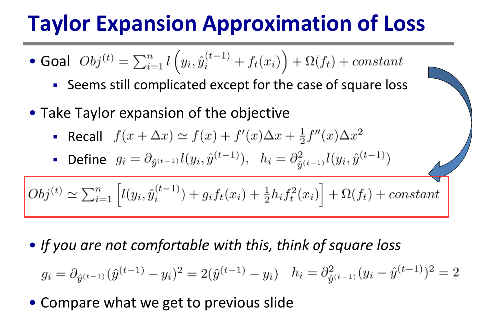

GBM之GBRT总结
GBM(gradient boosting machine)是一种ensemble机器学习框架，gradient boosting是boosting方法的一种，通过迭代拟合损失函数的负梯度值，我们常见的adaboost也是一种boosting方法，它通过迭代改变样本weight。
GBRT传统推导
GBM基本思想就是让损失函数持续下降，每次迭代先求得关于累加函数F(x)的负梯度(- gradient)，然后通过弱学习器f(x)去拟合该负梯度，然后将弱学习器f累加到F得到新的F。这里将函数F类比于参数theta就好理解了，平时给定模型我们如何迭代求解参数theta？对嘛，我们先求关于theta的目标函数负梯度，然后再和原来的theta累加更新为新的theta。这样两者就统一起来了，只不过GBM模型开始不是给定的，需要对f相加求得F，这也是为啥是ensemble的原因。
GBM可以处理分类/回归/排序问题，统一优化Object目标，区别仅在于损失函数不同而已，这个后面会推导。上面提到的弱学习器是回归模型，可以用各种回归模型，常见的是采用Tree based的Regression Tree，因此本文着重介绍GBRT(gradient boosting regression tree)。注:这里不用GBDT特指分类，统一使用GBRT，因为Object目标分类/回归没有本质区别，弱学习器统一做回归。
GBM算法流程图如下：
首先计算负梯度方向，使用CART进行回归拟合gm，然后优化最优步长ρm，最后累加到F更新F。
GBRT xgboost版本推导
利用梯度能够很直观理解，也画龙点睛到了GBRT中的gradient。但陈天奇大牛给出了更一般的推导，对loss做了二阶泰勒展开，引入了二阶倒数海森矩阵，并加入了正则项整体求最优，更加精确通用的描述了GBRT的来龙去脉。(陈天奇PPT http://homes.cs.washington.edu/~tqchen/pdf/BoostedTree.pdf)
机器学习目标可以描述为Obj = Loss + regularization。
回归的Loss可以选择square loss=(y-F)^2，y和F取值实数；分类的loss可以选择hinge loss=max(0,1-yF)或者logistic loss=ln(1+exp(-yF) )，y取值+1/-1，F取值实数；排序的loss可以选择pointwize(转为二分类问题)的hinge loss或者logistic loss，pairwize(xi-xj作为样本新x，转为二分类问题)的hinge loss，listwize的NDCG loss。下面给出几种loss function的效果对比，这里假设真实y=1情况，横坐标m表示预测值，纵坐标表示loss。
蓝色的是0-1loss，用于分类表示错误个数，往往作为和其他loss对比的baseline，红色的表示hinge loss，黄色表示logistic loss，绿色表示adaboost loss=exp(-yF)，黑色表示square loss。从上图可以看出:Hinge/logistic对于噪音函数不敏感，因为当m<0时，他们的反应不大，而square loss与adaboost loss可能更爱憎分明，尤其是square loss，因此对于分类问题square loss不太常用，更适合回归问题。
可见回归/分类/排序并未有本质上的区别，都是去最小化Obj，唯一不同的就是哪种loss function更适合而已。
因为现在的参数可以认为是在一个函数空间里面，我们不能采用传统的如SGD之类的算法来学习我们的模型，因此我们会采用一种叫做additive training的方式(boosting就是指additive training的意思)。每一次保留原来的模型不变，加入一个新的函数f到我们的模型中。
现在还剩下一个问题，我们如何选择每一轮加入什么f呢？答案是非常直接的，选取一个f来使得我们的目标函数尽量最大地降低。

将目标Obj做二阶泰勒展开，除去常数项(包括l(y,y^(t-1) ) )，求得每个样本的一阶导g和二阶导h，将目标函数按叶子节点规约分组，得到下图。
如果树结构是固定的时候，上式中Obj有闭式最小值解-叶子节点score Wj，如上图。

然而不幸的是，这时的树还是未知的，不过可以按照Gain最大化去构造。如果暴力的枚举所有CART树分裂情况，计算太复杂了，这里可以采用贪心算法：
1
2
3 遍历所有特征：
对每个特征所有取值排序
线性扫描1遍，确定该特征最好分裂值
最终得到所有特征中的最好特征最好分裂值，显然时间复杂度是O(nlogn*d*k).
我们可以发现，当推导目标的时候，像计算叶子节点分数和split分支这样的策略会自然地出现，而不再是像我们从书上学到的利用启发式规则，比如基于gini进行分支，叶子节点采用平均值。一切都有理可循，make sense!
GBRT采用CART根据value值split成二叉树，因此适合数值特征，针对类别特征，需要进行one-hot-encoder编码。这也解释了我在kaggle实战(一)中提到的，GBRT对高维稀疏特征效果不好，以及对于年月日这种特征，不进行one-hot编码直接采用数值效果好的原因。
xgboost
陈天奇大牛开源了xgboost工具包(https://github.com/dmlc/xgboost)， 这是一个GBRT大规模并行开源框架。xgboost是各种比赛的利器，我参加的kaggle比赛基本都要用xgboost跑一组结果，同时也可应用到工业界。
推荐大家有时间阅读学习下代码，可以参考陈天奇的PPT和网上的”xgboost导读和实战”，个人建议画出代码的UML类图，不清楚的细节用gbd断点打印调试。
总结
gradient版本将f类比于参数，通过f对负梯度进行回归，通过负梯度逐渐最小化Object目标；xgboost版本通过使得当前Object目标最小化，构造出回归树f，更直接。两者都是求得f对历史累积F进行修正。
对Obj进行二阶泰勒展开，是否可以像我上一篇无约束优化算法总结中写的，将传统的对负梯度的回归，改为对牛顿方向-H^-1*g的回归？GBRT是否有类似的NBRT名字？我感觉是可以的，至于为什么没有这么求解的还不清楚，求指导 :-)